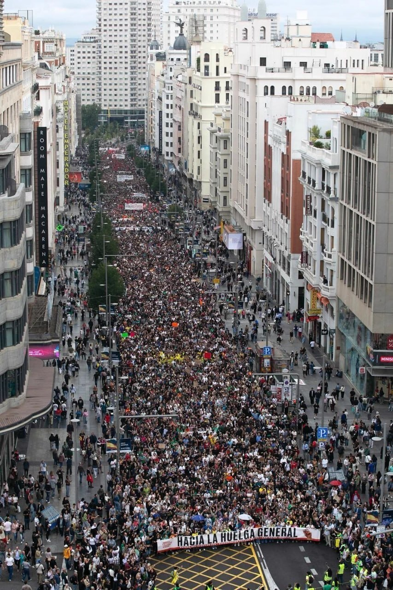

Топор Live
@toporlive
Топор Live
@toporlive
В Мадриде до 500 тыс. человек вышли на протест из-за жилищного кризиса RTVE.

⚡️В Мадриде до 500 тыс. человек вышли на протест из-за жилищного кризиса, — RTVE.
Такую цифру назвали организаторы, тогда как власти заявили о 70 тыс. участников.
Акции прошли более чем в 50 городах Испании после того, как Конгресс отклонил два декрета о доступе к жилью, правах арендаторов и защите уязвимых граждан от выселений. Протестующие призвали готовить всеобщую забастовку.
👉 Топор Live. Подписаться
Такую цифру назвали организаторы, тогда как власти заявили о 70 тыс. участников.
Акции прошли более чем в 50 городах Испании после того, как Конгресс отклонил два декрета о доступе к жилью, правах арендаторов и защите уязвимых граждан от выселений. Протестующие призвали готовить всеобщую забастовку.
👉 Топор Live. Подписаться